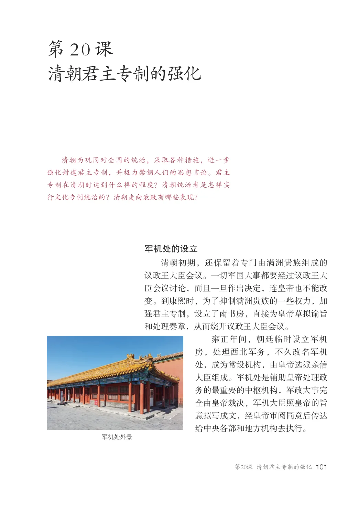
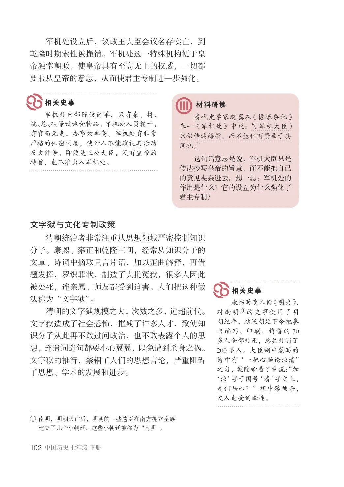
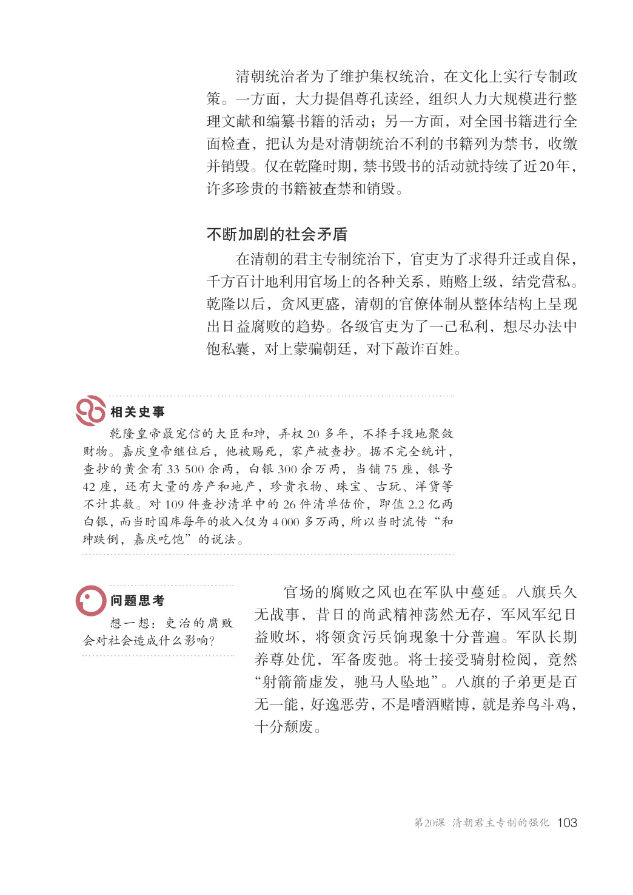
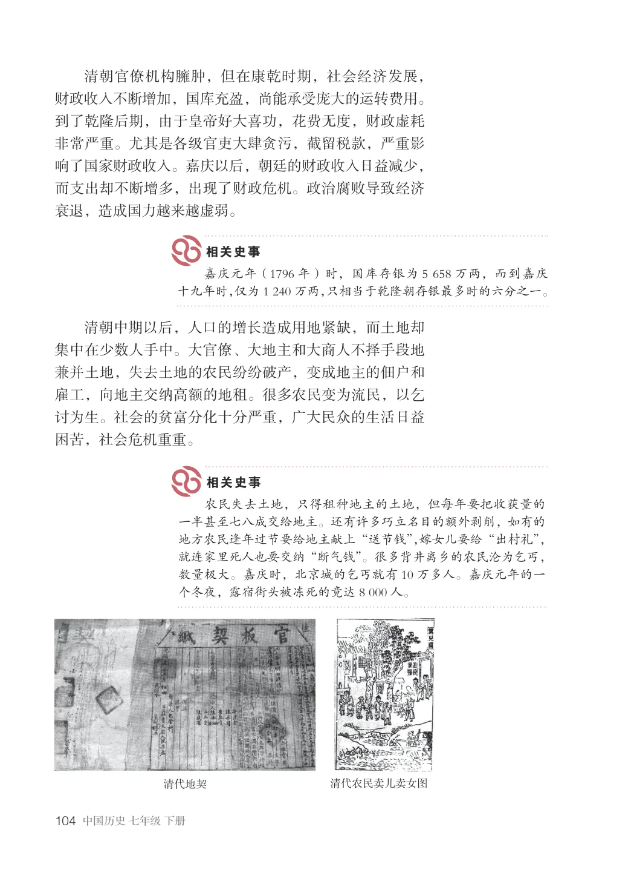
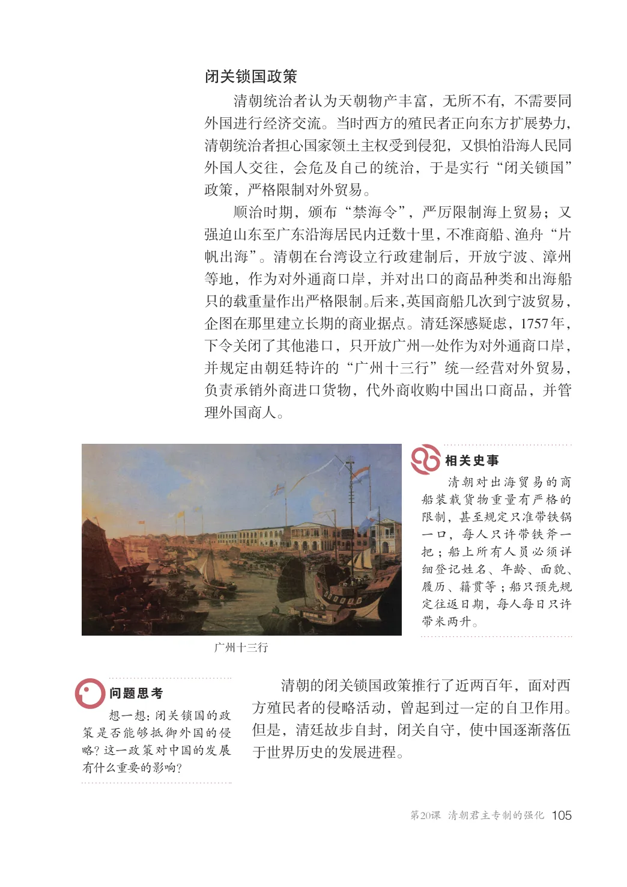
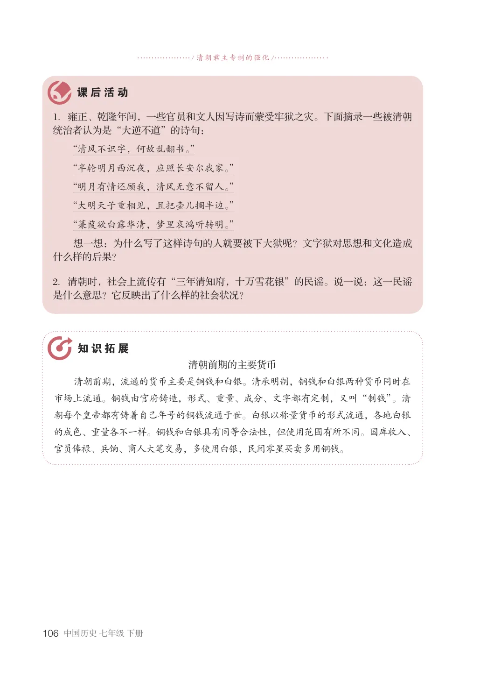

第3单元 · 教材第 101–106 页
第20课 清朝君主专制的强化
文字版依据教材 PDF 文本层整理；复杂地图、图表及版面关系请以右侧教材原页为准。
清朝为巩固对全国的统治，采取各种措施，进一步强化封建君主专制，并极力禁锢人们的思想言论。君主专制在清朝时达到什么样的程度？清朝统治者是怎样实行文化专制统治的？清朝走向衰败有哪些表现？
军机处的设立
清朝初期，还保留着专门由满洲贵族组成的议政王大臣会议。一切军国大事都要经过议政王大臣会议讨论，而且一旦作出决定，连皇帝也不能改变。到康熙时，为了抑制满洲贵族的一些权力，加强君主专制，设立了南书房，直接为皇帝草拟谕旨和处理奏章，从而绕开议政王大臣会议。
雍正年间，朝廷临时设立军机房，处理西北军务，不久改名军机处，成为常设机构，由皇帝选派亲信大臣组成。军机处是辅助皇帝处理政务的最重要的中枢机构，军政大事完全由皇帝裁决，军机大臣照皇帝的旨意拟写成文，经皇帝审阅同意后传达给中央各部和地方机构去执行。
军机处外景

军机处设立后，议政王大臣会议名存实亡，到乾隆时期索性被撤销。军机处这一特殊机构便于皇帝独掌朝政，使皇帝具有至高无上的权威，一切都要服从皇帝的意志，从而使君主专制进一步强化。
军机处内部陈设简单，只有桌、椅、炕、笔、砚等设施和物品。军机处人员精干，有官而无吏，办事效率高。军机处有非常严格的保密制度，使外人不能窥视其活动及文件等。即便是王公大臣，没有皇帝的特旨，也不准出入军机处。
清代史学家赵翼在《檐曝杂记》卷一《军机处》中说：“（军机大臣）只供传述缮撰，而不能稍有赞画于其间也。”这句话意思是说，军机大臣只是传达抄写皇帝的旨意，而不能把自己的意见夹杂进去。想一想：军机处的作用是什么？它的设立为什么强化了君主专制？
文字狱与文化专制政策
清朝统治者非常注重从思想领域严密控制知识分子。康熙、雍正和乾隆三朝，经常从知识分子的文章、诗词中摘取只言片语，加以歪曲解释，再借题发挥，罗织罪状，制造了大批冤狱，很多人因此被处死，连亲属、师友都受到迫害。人们把这种做法称为“文字狱”。清朝的文字狱规模之大，次数之多，远超前代。文字狱造成了社会恐怖，摧残了许多人才，致使知识分子从此再不敢过问政治，也不敢表露个人的思想，连遣词造句都要小心翼翼，以免遭到杀身之祸。文字狱的推行，禁锢了人们的思想言论，严重阻碍了思想、学术的发展和进步。
康熙时有人修《明史》，对南明①的史事使用了明朝纪年，结果朝廷下令把参与编写、印刷、销售的70多人全部处死，总共处罚了200多人。大臣胡中藻写的诗中有“一把心肠论浊清”之句，乾隆帝看了竟说：“加‘浊’字于国号‘清’字之上，是何居心？”胡中藻被杀，友人也受到牵连。
①南明，明朝灭亡后，明朝的一些遗臣在南方拥立皇族
建立了几个小朝廷，这些小朝廷被称为“南明”。

清朝统治者为了维护集权统治，在文化上实行专制政策。一方面，大力提倡尊孔读经，组织人力大规模进行整理文献和编纂书籍的活动；另一方面，对全国书籍进行全面检查，把认为是对清朝统治不利的书籍列为禁书，收缴并销毁。仅在乾隆时期，禁书毁书的活动就持续了近20年，许多珍贵的书籍被查禁和销毁。
不断加剧的社会矛盾
在清朝的君主专制统治下，官吏为了求得升迁或自保，千方百计地利用官场上的各种关系，贿赂上级，结党营私。乾隆以后，贪风更盛，清朝的官僚体制从整体结构上呈现出日益腐败的趋势。各级官吏为了一己私利，想尽办法中饱私囊，对上蒙骗朝廷，对下敲诈百姓。
乾隆皇帝最宠信的大臣和，弄权20多年，不择手段地聚敛财物。嘉庆皇帝继位后，他被赐死，家产被查抄。据不完全统计，查抄的黄金有33500余两，白银300余万两，当铺75座，银号42座，还有大量的房产和地产，珍贵衣物、珠宝、古玩、洋货等不计其数。对109件查抄清单中的26件清单估价，即值2.2亿两白银，而当时国库每年的收入仅为4000多万两，所以当时流传“和跌倒，嘉庆吃饱”的说法。
官场的腐败之风也在军队中蔓延。八旗兵久无战事，昔日的尚武精神荡然无存，军风军纪日益败坏，将领贪污兵饷现象十分普遍。军队长期养尊处优，军备废弛。将士接受骑射检阅，竟然“射箭箭虚发，驰马人坠地”。八旗的子弟更是百无一能，好逸恶劳，不是嗜酒赌博，就是养鸟斗鸡，十分颓废。
想一想：吏治的腐败会对社会造成什么影响？

清朝官僚机构臃肿，但在康乾时期，社会经济发展，财政收入不断增加，国库充盈，尚能承受庞大的运转费用。到了乾隆后期，由于皇帝好大喜功，花费无度，财政虚耗非常严重。尤其是各级官吏大肆贪污，截留税款，严重影响了国家财政收入。嘉庆以后，朝廷的财政收入日益减少，而支出却不断增多，出现了财政危机。政治腐败导致经济衰退，造成国力越来越虚弱。
嘉庆元年（1796年）时，国库存银为5658万两，而到嘉庆十九年时，仅为1240万两，只相当于乾隆朝存银最多时的六分之一。
清朝中期以后，人口的增长造成用地紧缺，而土地却集中在少数人手中。大官僚、大地主和大商人不择手段地兼并土地，失去土地的农民纷纷破产，变成地主的佃户和雇工，向地主交纳高额的地租。很多农民变为流民，以乞讨为生。社会的贫富分化十分严重，广大民众的生活日益困苦，社会危机重重。
农民失去土地，只得租种地主的土地，但每年要把收获量的一半甚至七八成交给地主。还有许多巧立名目的额外剥削，如有的地方农民逢年过节要给地主献上“送节钱”，嫁女儿要给“出村礼”，就连家里死人也要交纳“断气钱”。很多背井离乡的农民沦为乞丐，数量极大。嘉庆时，北京城的乞丐就有10万多人。嘉庆元年的一个冬夜，露宿街头被冻死的竟达8000人。
清代农民卖儿卖女图
清代地契

闭关锁国政策
清朝统治者认为天朝物产丰富，无所不有，不需要同外国进行经济交流。当时西方的殖民者正向东方扩展势力，清朝统治者担心国家领土主权受到侵犯，又惧怕沿海人民同外国人交往，会危及自己的统治，于是实行“闭关锁国”政策，严格限制对外贸易。顺治时期，颁布“禁海令”，严厉限制海上贸易；又强迫山东至广东沿海居民内迁数十里，不准商船、渔舟“片帆出海”。清朝在台湾设立行政建制后，开放宁波、漳州等地，作为对外通商口岸，并对出口的商品种类和出海船只的载重量作出严格限制。后来，英国商船几次到宁波贸易，企图在那里建立长期的商业据点。清廷深感疑虑，1757年，下令关闭了其他港口，只开放广州一处作为对外通商口岸，并规定由朝廷特许的“广州十三行”统一经营对外贸易，负责承销外商进口货物，代外商收购中国出口商品，并管理外国商人。
清朝对出海贸易的商船装载货物重量有严格的限制，甚至规定只准带铁锅一口，每人只许带铁斧一把；船上所有人员必须详细登记姓名、年龄、面貌、履历、籍贯等；船只预先规定往返日期，每人每日只许带米两升。
广州十三行
清朝的闭关锁国政策推行了近两百年，面对西方殖民者的侵略活动，曾起到过一定的自卫作用。但是，清廷故步自封，闭关自守，使中国逐渐落伍于世界历史的发展进程。
想一想：闭关锁国的政策是否能够抵御外国的侵略？这一政策对中国的发展有什么重要的影响？

/ 清朝君主专制的强化/
1．雍正、乾隆年间，一些官员和文人因写诗而蒙受牢狱之灾。下面摘录一些被清朝统治者认为是“大逆不道”的诗句：
“清风不识字，何故乱翻书。”“半轮明月西沉夜，应照长安尔我家。”“明月有情还顾我，清风无意不留人。”“大明天子重相见，且把壶儿搁半边。”“蒹葭欲白露华清，梦里哀鸿听转明。”想一想：为什么写了这样诗句的人就要被下大狱呢？文字狱对思想和文化造成什么样的后果？
2．清朝时，社会上流传有“三年清知府，十万雪花银”的民谣。说一说：这一民谣是什么意思？它反映出了什么样的社会状况？
清朝前期的主要货币清朝前期，流通的货币主要是铜钱和白银。清承明制，铜钱和白银两种货币同时在市场上流通。铜钱由官府铸造，形式、重量、成分、文字都有定制，又叫“制钱”。清朝每个皇帝都有铸着自己年号的铜钱流通于世。白银以称量货币的形式流通，各地白银的成色、重量各不一样。铜钱和白银具有同等合法性，但使用范围有所不同。国库收入、官员俸禄、兵饷、商人大笔交易，多使用白银，民间零星买卖多用铜钱。
